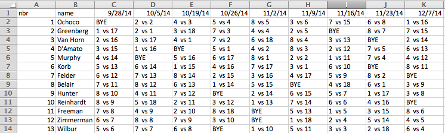

Draw Conversion (Version 1.1)
This utility will convert Satrom’s spreadsheet format into the CSV format needed for Curling Club Manager.
Steps:
-
Make some manual tweaks to Satrom’s spreadsheet.
- When opening the spreadsheet, make sure the enable the macros.
- Select the “Automated Sheet” tab.
- Copy all the cells on that worksheet.
- Create a new blank spreadshet.
- Paste the cells using “Paste Special...”, then choose “Values and formats”, into the new spreadsheet.
- Format it so that it looks like this:

- Delete all rows and columns that do NOT contain actual data (probably columns C and D and the first row).
- Give columns A and B the titles “nbr” and “name”
- Make sure the team “name” column matches the team names listed on the Import Template. Edit as necessary.
- Save it as a CSV (comma separated file).
-
Upload the file you just created.
-
You should then have a CSV file ready to be uploaded to the Curling Club website.
Download
The columns exported are:
| Start Date |
Start Time |
Team 1 Name |
Team 2 Name |
Team 1 Score |
Team 2 Score |
Sheet |
Division |
Round |